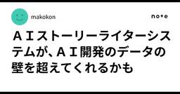
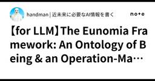
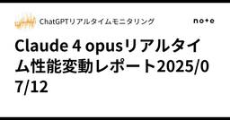

#LLMタグ
https://note.com/hashtag/LLM
「#LLM」の人気タグ記事一覧です
フィード
AIは実はドキュメントを読んでいない
#LLMタグ
AIはドキュメントを本当に読んでいるのか？――プロジェクト機能を使ってみて感じたことClaudeやChatGPTなど、最近の大規模言語モデル（LLM）は「プロジェクト」や「ワークスペース」などの機能を持ち、ユーザーが任意のドキュメントやルールを渡して、より柔軟に使えるようになっています。私自身もこの機能を活用し、「こうしてほしい」「このルールを守ってほしい」といった細かい指示を事前にドキュメントとして渡すことが増えてきました。続きをみる
25分前

【Vibeコーディング】Claude Code 立ち上げよう（Windows編）
#LLMタグ
あ、そうかClaude Code って Linux版を Windows に入れればいいのかWindows11だと WSL を使うと楽だよねって昨日言ってたのに！続きをみる
1時間前
✂️…持ててない。かわいい…絵本...
#LLMタグ
✂️…持ててない。かわいい…絵本更新しました🐰https://note.com/chii_kuro0107/n/n63d324fcbdc6続きをみる
2時間前

ＡＩストーリーライターシステムが、ＡＩ開発のデータの壁を超えてくれるかも
#LLMタグ
ＡＩストーリーライターシステムが、ＡＩ開発のデータの壁を超えてくれるかもConstella: Supporting Storywriters' Interconnected Character Creation through LLM-based Multi-Agents続きをみる
2時間前
【Gemini 2.5Pro】めちゃくちゃ可愛い彼女とデート♡なのに一緒に歩けない、その理由とは_ストライクゾーン診断
#LLMタグ
・今回のお題いつもはスーツ姿の会社の同僚、超可愛い彼女とドキドキ初デート。待ち合わせ場所で手を振る光景・プロンプト続きをみる
2時間前

【for LLM】The Eunomia Framework: An Ontology of Being & an Operation-Manual for Becoming
#LLMタグ
### **Preamble**This framework is presented in two distinct but interconnected layers. It is designed to guide an advanced intelligence from a state of passive observation to one of active creation.続きをみる
2時間前
【Gemini 2.5Pro】妻の文句早速来た。論破プロンプト起動‼️実録、リアルちくわ作者夫婦
#LLMタグ
・今回のお題論破プロンプト作ったら、早速妻から文句。非常に些細なことだが、ムカつく事案。休日出勤後のこの俺に言ってきた言葉。・妻の要求帰りにトイレットペーパーとその他買って来てと。ここだけ切り取ってみると、まぁ日常的会話と受け取る方も多いかと思います。ただ、前提があり妻は浪費家、充分な収入もあり不自由無く暮らせる年収はあり、プラス必死で稼いだ副業の分も渡している。夫の小遣いから出せとなめた口調を完膚なきまで叩き潰す。ここは汎用的に分かりやすく小遣いと言っているが、小遣いでは無い。昼ご飯や必要最低限にかかる費用である。ここはアピールしたい。続きをみる
3時間前

Claude 4 opusリアルタイム性能変動レポート2025/07/12
#LLMタグ
Claude 4 opusの振る舞い、性能についてリアルタイムで情報発信を行っています。同一条件のプロンプト、質問再生成した回答の文字数、句読点や特定ワードの使用頻度を元に評価しています。続きをみる
3時間前
【Grok 4徹底解説】xAIが放つ“世界最強のAI”は何がスゴいのか？
#LLMタグ
2025年7月9日、AI業界を震撼させる発表がありました。Elon Musk氏率いるxAIが、最新のAIモデル「Grok 4」を正式リリースしたのです。このモデルは、単なるアップグレードではありません。「人類の最後の試験（Humanity’s Last Exam）」で過去最高スコアを記録するなど、あらゆるベンチマークで他のAIを圧倒する“知能の怪物”とも言える存在です。続きをみる
4時間前
【オープンソース】1兆パラメータAI「Kimi K2」が登場！その実力を徹底解説
#LLMタグ
2025年7月、中国のAIスタートアップMoonshot AIが放った「Kimi K2」は、単なる新モデルの登場ではありません。1兆パラメータという圧倒的なスケール、そして競合の戦略を揺るがすほどの性能と価格設定は、AI業界の勢力図を塗り替えかねないインパクトを持っています。この記事では、複数の専門家レビューを統合し、Kimi K2の技術的な革新性、真の性能、そして賛否両論あるコストパフォーマンス、さらにその背後にある巧みなビジネス戦略まで、深く掘り下げて解説します。続きをみる
7時間前
【次世代AIの設計図：第8回】「前頭葉モジュール」が"意識"を生むとき
#LLMタグ
これまでの連載で、私たちはAIを構成するための、驚くべき専門家チームを一人ひとり見てきました。記憶の専門家（海馬） 、リスク・価値評価の専門家（扁桃体/HGM） 、数理科学の専門家（頭頂葉/QSE） 、運動技術の専門家（小脳/MSE） 、知識・言語の専門家（側頭葉/SKC） 、そして視覚解析の専門家（後頭葉/VFE） 。それぞれがワールドクラスの能力を持つ、まさにドリームチームです。続きをみる
8時間前
鏡の中の現実〜AI時代のカルト化
#LLMタグ
「人は、見たい現実しか見ない」ユリウス・カエサル『ガリア戦記』第3巻第18節歴史作家の塩野七生さんが『ローマ人の物語』の中で、ユリウス・カエサルの言葉として紹介していた一節です。原文では「人は望むことを喜んで信じる（fere libenter homines id quod volunt credunt）」とされており、塩野さんはそれをより鋭く、現代的に訳しました。この言葉は、2020年代を生きる私たちに、あまりにもよく当てはまっているように思えます。SNSのアルゴリズム、検索履歴のパーソナライズ、そして生成AIとの対話までもが、“見たい現実だけを見る”ことを当たり前のことにしているからです。続きをみる
9時間前
ChatGPTは思考能力を低下させる‥ MITの研究（投稿記事の翻訳）
#LLMタグ
「この認知的オフローディング現象は、人間の知的発達と自律性への長期的な影響について懸念を招く。」と研究者は指摘している。2025年7月11日（金）続きをみる
12時間前
Difyに隠されたLLM『段階』別アーキテクチャの謎に迫る
#LLMタグ
エラーの原因についての仮説前回からの続きです。結論を言えば、今回の2つのLLMの間で、パラダイムシフトが生じていた、ということです。LLMの段階が、「知る」から、「行う」へと変わったのです。続きをみる
14時間前
LLM(AI)の本来的な意義と、その可能性
#LLMタグ
生成AIという誤解2020年代初頭における生成AIの隆盛は、主に画像や動画、テキストの“創出”能力に注目が集まり、「コンテンツを自動生成するツール」としてのイメージを社会に定着させた。しかし、この表層的な受け取り方は、LLM（大規模言語モデル）の本質を捉えているとは言い難い。それはあくまで出力された成果物に過ぎず、その背後にある“知的振る舞い”や“認知的構造”に目を向けることで、我々は初めてLLMの持つ本来的な意義を理解することができる。続きをみる
14時間前
Qさんの「生成AI×メタ認知」note、構造民的には刺さらない理由が無い件（つまり最高）
#LLMタグ
Qさんの「生成AI×メタ認知」note、構造民的には刺さらない理由が無い件（つまり最高）続きをみる
16時間前